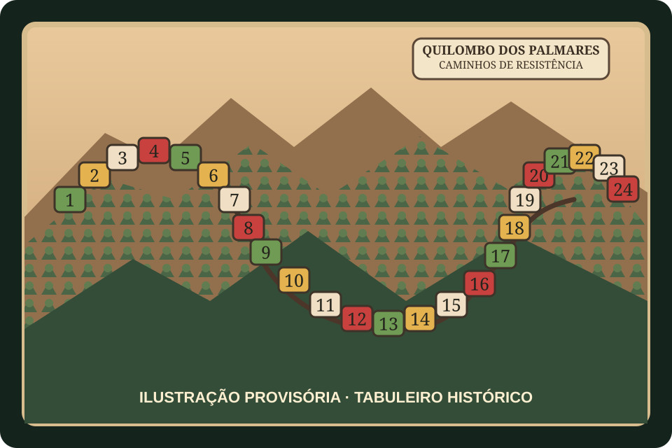

Quilombo dos Palmares: Caminhos de Resistência
RPG de tabuleiro sobre história e resistência
Jogo criado por alunas como trabalho da disciplina de História. O resumo das regras e outros detalhes serão acrescentados com as autoras.

O desafio
O que observar neste jogo
Quilombo dos Palmares: Caminhos de Resistência é um RPG de tabuleiro desenvolvido por Isabela e outras alunas como trabalho da disciplina de História. O jogo aborda o Quilombo dos Palmares e os caminhos de resistência, conforme a proposta de suas criadoras.
A fotografia mostra um tabuleiro com percurso numerado e peças de jogo. A dinâmica narrativa, os personagens, a preparação, os turnos e as condições de vitória ainda serão documentados com base nas regras elaboradas pelas estudantes.
Autoria estudantil
Sobre a criação do jogo
Jogo de RPG de tabuleiro desenvolvido por Isabela e outras alunas como trabalho da disciplina de História.
- Autoria
- Isabela; Outras alunas — nomes a acrescentar
- Disciplina
- História
- Professora responsável
- Nome a acrescentar
Espaço reservado
Resumo das regras e outros detalhes
Resumo das regras a acrescentar posteriormente.
Este espaço será preenchido com as regras, a preparação da partida, os personagens, as ações possíveis, os objetivos e outros detalhes confirmados com as autoras.
Guia de ação
Como experimentar
- 1
Conheça o tabuleiro
Observe o percurso, as cores, os marcadores e os demais componentes. Os significados de cada elemento serão descritos quando as regras forem acrescentadas.
- 2
Consulte as regras das autoras
A preparação, a sequência de turnos, as ações possíveis e o objetivo da partida ainda precisam ser registrados. Não presumimos essas regras a partir apenas da fotografia.
- 3
Relacione jogo e contexto histórico
Quando a proposta completa estiver disponível, use a mediação para conversar sobre o contexto histórico representado e sobre as escolhas narrativas feitas pelas criadoras.
Possibilidades educativas
O que a atividade pode mobilizar
Contextualização histórica
Pode apoiar a discussão sobre o Quilombo dos Palmares e as formas de resistência, conforme o conteúdo e a mediação propostos pelas autoras.
Colaboração e tomada de decisões
A dinâmica específica ainda será confirmada; quando as regras forem documentadas, será possível descrever melhor as decisões individuais e coletivas.
Autoria e criação
Permite valorizar a produção de conhecimento das estudantes e conversar sobre como conteúdos históricos podem ser transformados em uma experiência de jogo.
“Pode mobilizar” não significa “desenvolve automaticamente”. A experiência depende da proposta, da repetição, do diálogo e das condições de participação.
Mediação
Perguntas que mantêm o problema aberto
- Que contexto histórico as criadoras quiseram apresentar por meio do jogo?
- Como as escolhas de personagens, percurso e acontecimentos ajudam a contar essa história?
- Que informações históricas precisam ser consultadas para compreender melhor a proposta?
Participação e acessibilidade
Formas de adaptar sem retirar o desafio
- Apresente o tabuleiro e as peças verbalmente antes de começar, combinando formas de participação acessíveis ao grupo.
- Permita que participantes se revezem na leitura das regras, na movimentação das peças e no registro das decisões, conforme a dinâmica final.
- Reserve espaço para perguntas e contextualização histórica, sem tratar a experiência de jogo como substituta do estudo das fontes.